Chat
Risposte con le fonti
La chat non si limita a rispondere: elenca i file che ha usato e i passaggi citati con la pagina. Da lì puoi aprire il PDF, o spuntare i documenti per continuare a lavorare solo su quelli.
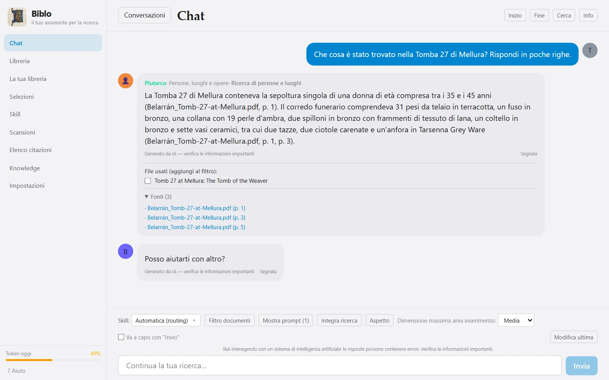
Fai ricerca e non sai ancora come usare l'intelligenza artificiale nel tuo lavoro?
Colleghi una volta le cartelle dei tuoi PDF e Biblo li legge tutti: a ogni domanda cerca da solo nell'intera libreria, e sotto ogni risposta ti mostra documento e pagina. L'AI ti affianca, il lavoro e il giudizio restano tuoi.
Gratis · Windows 10 e 11 a 64 bit · Mac con chip Apple, macOS 15 o successivo
Il lavoro che in una ricerca porta via più tempo, fatto sui tuoi documenti e con le fonti sempre in vista.
Non devi caricare file nella chat né scegliere ogni volta su quali documenti lavorare: Biblo ha già letto tutto ciò che hai collegato e a ogni domanda va a cercare da solo, in tutta la libreria, i passaggi che servono. Così diventa un assistente costruito attorno al tuo lavoro e a quello che stai cercando di portare a termine. E se vuoi concentrarti su pochi testi, una selezione restringe il campo.
Fai domande in linguaggio naturale ai tuoi PDF: la risposta arriva con i passaggi citati, documento e pagina.
Descrivi un argomento e Biblo ti dice quali volumi ne parlano davvero, in ordine di pertinenza.
La sintesi di un volume, l'analisi di un'argomentazione, il confronto fra due testi: ogni compito ha un assistente specializzato.
Biblo costruisce le schede di autori, opere e figure e collega i documenti fra loro, così vedi dove si incrociano.
Un indice unico di ciò che i tuoi testi citano, opere, autori e figure, con quante volte compare ogni voce.
I PDF senza testo, come i volumi scansionati, vengono letti con l'OCR e diventano interrogabili come gli altri.
Biblo non scrive la ricerca al posto tuo: legge, cerca, mette in fila le fonti. Ogni risposta si può verificare sul testo, e se nei tuoi documenti la risposta non c'è te lo dice. Le domande, le scelte e le conclusioni restano tue.
Biblo non costa nulla e non ha abbonamenti. Per l'intelligenza artificiale usa una tua chiave personale di Google Gemini, anche questa gratuita: si crea in un minuto e l'app ti mostra come. Le richieste partono dal tuo account, i file restano sul tuo computer (a Google arriva solo il brano che serve per ogni risposta) e la chiave la revochi quando vuoi.
Se hai centinaia di volumi, il problema non è più trovare un termine: è ricordare in quale libro se ne parlava, e come. Biblo tiene insieme le due cose — cerca nel significato, non nelle lettere, e ti riporta il passaggio esatto da cui ha tratto quello che dice.
Chiedi «come veniva giustificato il consenso» e trova i passaggi che ne parlano, anche se quelle parole non ci sono.
Sotto ogni risposta ci sono i file usati e i brani citati con il numero di pagina. Un clic apre il PDF nel punto giusto.
Se nei tuoi documenti la risposta non c'è, te lo dice invece di inventarla.
Poi la libreria resta pronta: si aggiorna solo quando aggiungi documenti nuovi.
Indichi dove stanno i PDF. Restano dove sono: niente caricamenti, niente copie in cloud, niente cartelle da riorganizzare.
Tre fasi separate e ripetibili. Leggi prepara il testo per la ricerca. Ispeziona costruisce le schede di autori, opere e figure. Trova collegamenti mette in relazione i documenti fra loro.
Scrivi la domanda in chat. Biblo sceglie l'assistente adatto, cerca nei testi, seleziona i passaggi e risponde citandoli.
Ogni schermata qui sotto è l'applicazione vera, non un mockup.
La chat non si limita a rispondere: elenca i file che ha usato e i passaggi citati con la pagina. Da lì puoi aprire il PDF, o spuntare i documenti per continuare a lavorare solo su quelli.

Riassumere un volume, confrontare due testi, trovare un passo, analizzare un'argomentazione: ogni compito ha il suo assistente, con il suo modo di leggere. Biblo sceglie da solo quello adatto alla domanda — oppure lo scegli tu.
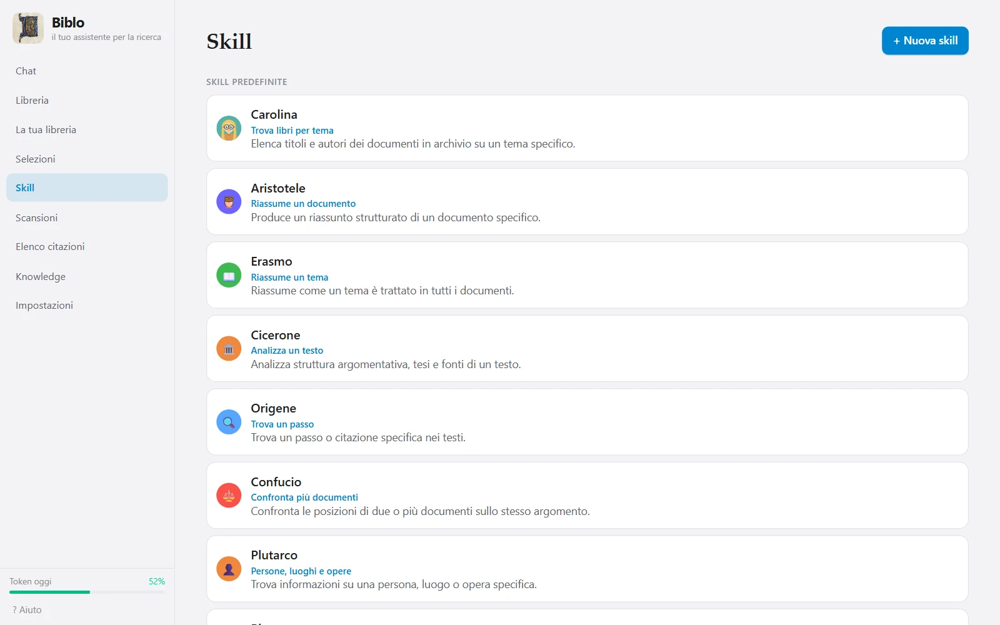
A colpo d'occhio: quanti documenti sono stati letti, quanti ispezionati, quanti collegati. Le tre fasi sono separate apposta, così puoi leggere tutto subito e approfondire con calma.
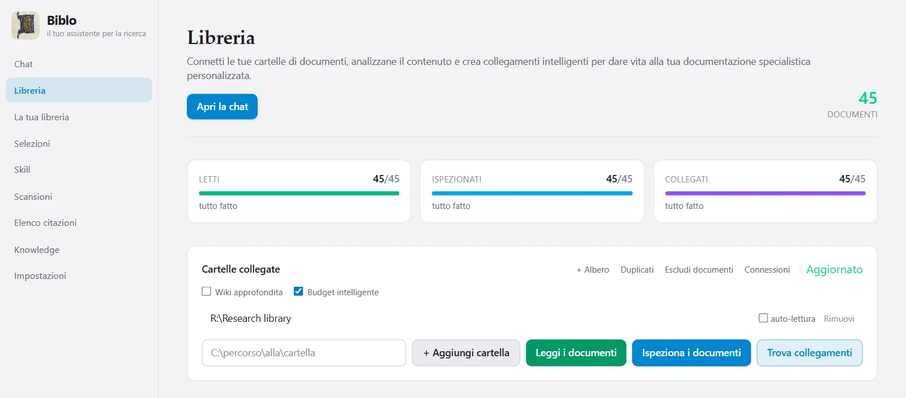
I tuoi documenti diventano volumi su una mensola, ordinabili per data, titolo o autore, con la lingua e il segno delle scansioni. Un clic apre il libro.
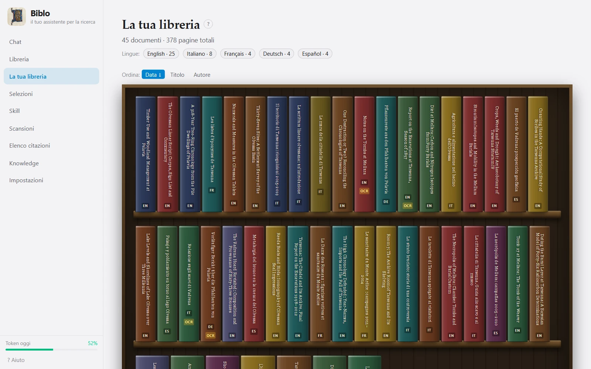
Descrivi un tema e Biblo ti dice quali volumi ne parlano davvero, in ordine di pertinenza. Il risultato si salva come selezione e diventa il perimetro della conversazione.
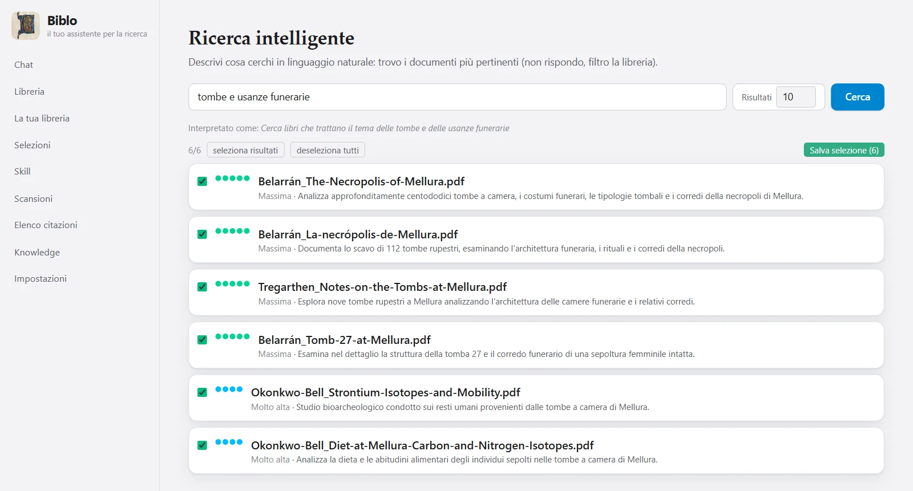
I libri scansionati e i PDF senza testo vengono letti dall'OCR integrato e diventano cercabili come gli altri. Il testo riconosciuto sta accanto alla pagina, e lo puoi correggere.
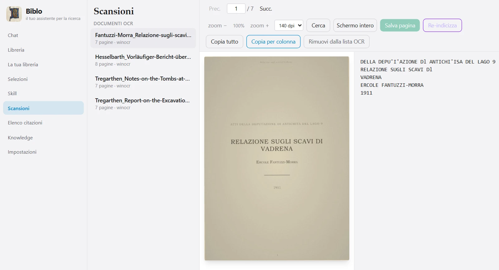
Tutto ciò che i tuoi testi citano — opere, autori, figure — raccolto in un indice unico e consultabile, con quante volte compare ogni voce.
Restringi la conversazione a un gruppo di documenti: fuori da quella selezione Biblo non guarda, né per cercare né per citare.
Interfaccia in cinque lingue, tema chiaro o scuro e zoom regolabile: tutto scala, niente diventa illeggibile.
Schede, collegamenti e conversazioni stanno in file sul tuo disco, e si esportano quando vuoi.
Ogni schermata è l'applicazione vera, nella lingua che hai scelto qui sopra. I documenti invece sono inventati: una libreria dimostrativa creata apposta.
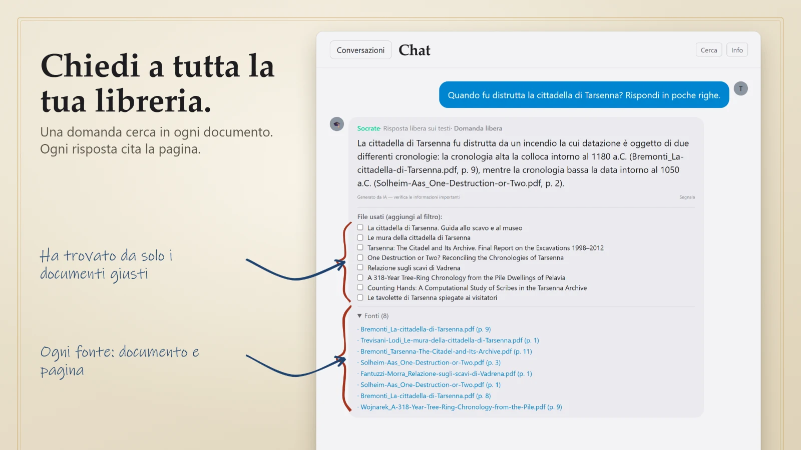
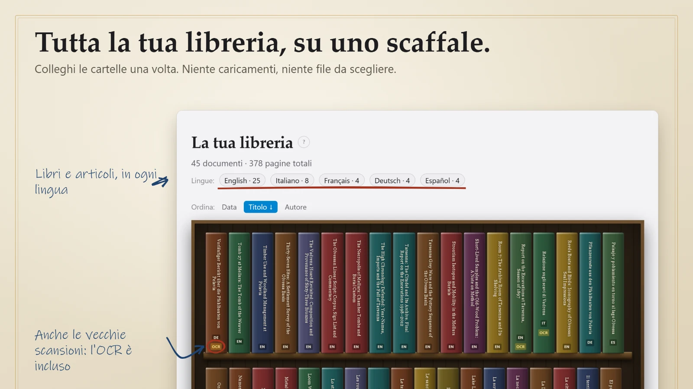
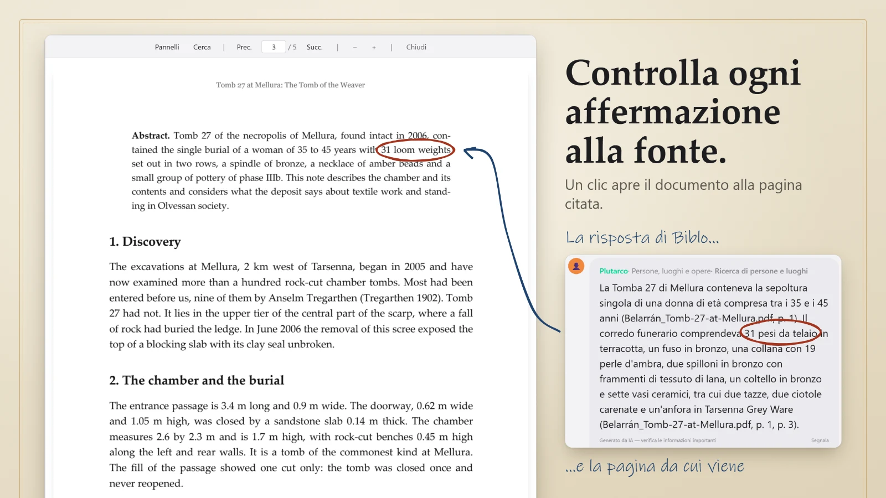
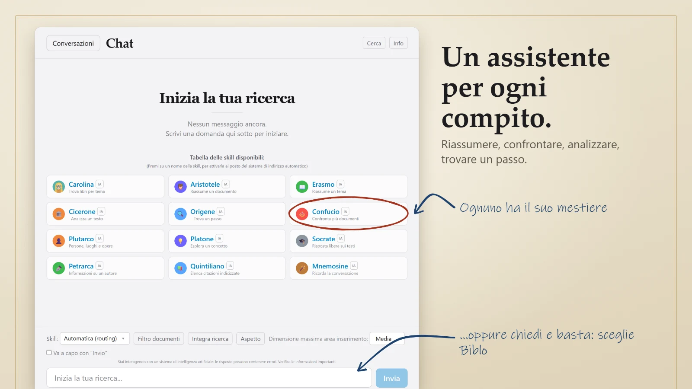
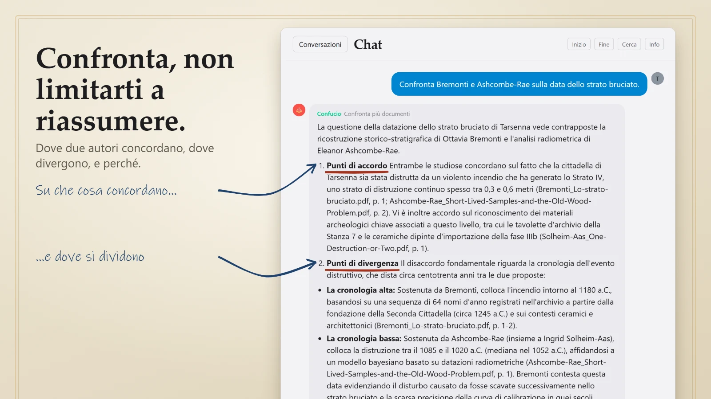
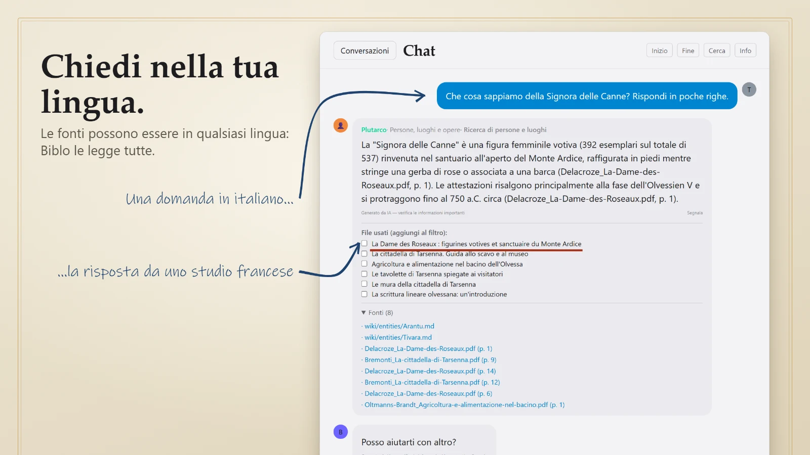
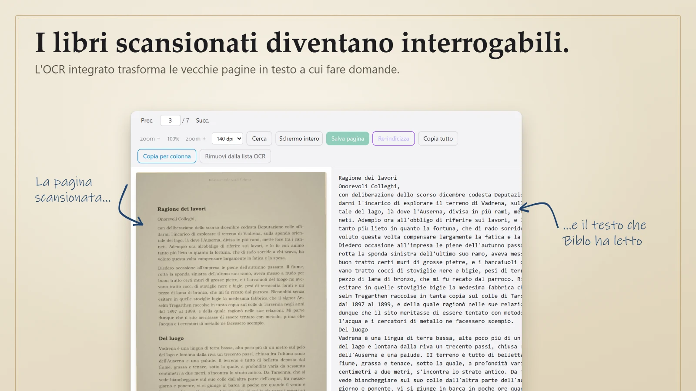
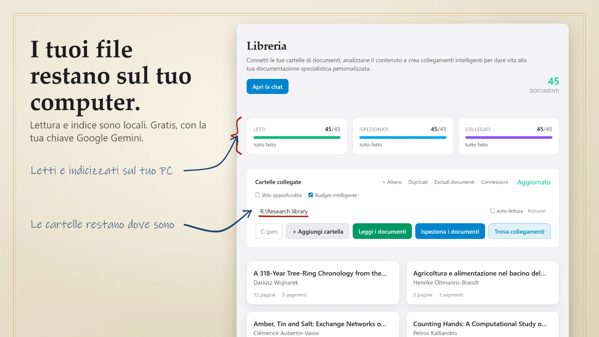
Scorri di lato per vedere il resto →
La lettura, l'indice e l'archivio delle ricerche sono locali: nessun file viene caricato da nessuna parte. Quando fai una domanda, al modello linguistico parte solo il brano necessario a risponderti, insieme alla domanda. Non passa da server nostri e non lo conserviamo.
I PDF restano nelle tue cartelle. L'indice vive accanto a loro, sul tuo disco.
Alla chat esce il brano che serve per quella singola risposta, non la biblioteca.
Biblo usa una tua chiave del fornitore del modello: le richieste passano dal tuo account, non dal nostro.
Niente da configurare a mano. Su Windows si installa per il tuo utente, senza permessi di amministratore; sul Mac si apre il file scaricato e si trascina Biblo nella cartella Applicazioni.
Il file non è ancora pubblicato: il pulsante porta alla pagina dei rilasci.
(Get-FileHash Biblo_1.2.2_x64-setup.exe -Algorithm SHA256).Hash
1AE2E2919484745B1E72374FBF4A48816DE162610532B5BE91CF8E1CCDED428A
shasum -a 256 Biblo_1.2.2_aarch64.dmg
316ddc61fd145d95194e48633ed05639292dadc26a69ca482e488310d079b221
Windows a 64 bit, oppure un Mac con chip Apple (M1 o successivi) e macOS 15 Sequoia o successivo. Per ora non ci sono versioni per Linux né per i Mac con processore Intel.
Circa 2,5 GB: l'applicazione, il modello che trasforma il testo in numeri e l'indice della tua libreria.
Di Google Gemini: si ottiene in un minuto dal sito di Google. Senza chiave la parte AI non può funzionare, ma il resto sì: importare, leggere e cercare nei documenti sono operazioni locali, e l'app te la chiede solo quando usi una funzione AI (chat, ispezione dei documenti, collegamenti).
Tutto gira sul processore. Su macchine modeste la prima lettura è lenta, ma l'app tiene i core liberi apposta per non bloccarti il computer.
Per leggere e cercare nei documenti no: quella parte è tutta locale. Serve per la chat e per l'ispezione, perché la risposta e le schede vengono generate da un modello linguistico che sta online.
L'applicazione è gratuita. Per le funzioni AI serve una chiave di Google Gemini, il fornitore del modello, che ha un piano gratuito: il consumo della chat pesa su quel piano, non su di noi.
Da Google AI Studio, con un qualsiasi account Google: è gratis e ci vogliono un paio di minuti. La prima volta Google chiede di accettare le sue condizioni (servono almeno 18 anni); poi si crea la chiave e la si incolla in Biblo, che la verifica. Il video mostra ogni passaggio.
PDF, compresi quelli scansionati: se un documento non ha testo, Biblo lo passa all'OCR e poi lo tratta come tutti gli altri.
Biblo è sviluppato su una libreria di 70 volumi e oltre 11.000 pagine, e lavora normalmente. Il limite pratico non è il numero di file ma il tempo della prima lettura, che dipende dal tuo processore.
Succede solo con l'installer .exe scaricato da questo sito: è l'avviso che Windows mostra per ogni programma non firmato con un certificato commerciale. Dal Microsoft Store invece Biblo si installa senza avvisi, perché il pacchetto lo firma Microsoft. Se usi l'installer, puoi verificare l'impronta SHA-256 del file scaricato con il valore pubblicato qui sopra: se corrisponde, il file è esattamente quello pubblicato.
Da parte nostra no: non riceviamo né conserviamo i tuoi file. Alla generazione di una risposta viene inviato al fornitore del modello solo il brano necessario. Sul piano gratuito, però, Google può usare quei testi per migliorare i suoi modelli, e non lo si può disattivare. L'app te lo spiega quando inserisci la chiave.
Sì, ed è il funzionamento normale: la chiave la inserisci tu e le richieste passano dal tuo account presso il fornitore.
No. I PDF restano dove sono sempre stati, nelle tue cartelle. Sul Mac Biblo si toglie trascinandolo nel Cestino, e i dati che ha prodotto (indice, chat, impostazioni) restano nella cartella Libreria › Application Support › Biblo del tuo utente: cancellala anche lei se non ti servono più.